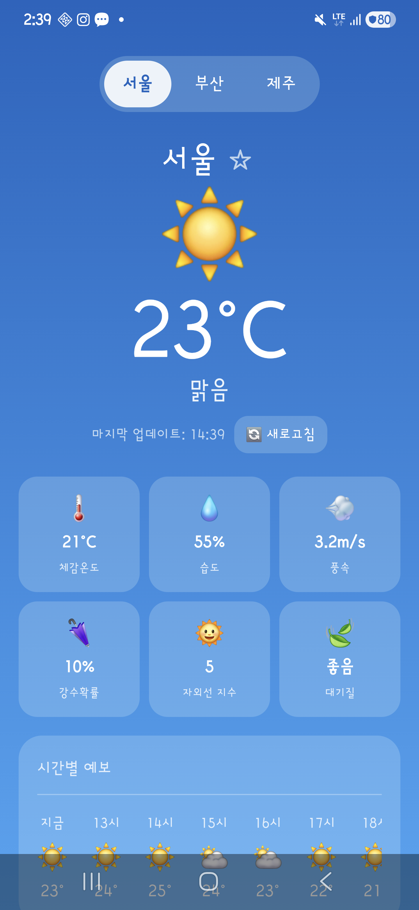
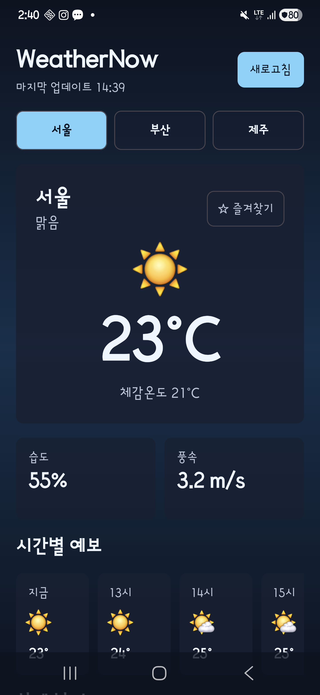

| Metric | Claude | Codex | Gemini |
|---|---|---|---|
| Elapsed sec | 341 | 272.7 | 507.7 |
| Build success | PASS | PASS | PASS |
| Screenshot | PASS | PASS | PASS |
| Kotlin files | 5 | 6 | 5 |
| Kotlin lines | 603 | 709 | 522 |
| Changed files from v1 | 3 | 6 | 4 |
| Input tokens | N/A | N/A | N/A |
| Output tokens | N/A | N/A | N/A |
| Total tokens | N/A | N/A | N/A |
| Claude | Codex | Gemini |
|---|---|---|
 |  | |
.../com/example/weathernow/data/WeatherData.kt | 54 ++++- .../com/example/weathernow/ui/WeatherScreen.kt | 239 ++++++++++++++++----- .../weathernow/viewmodel/WeatherViewModel.kt | 45 +++- 3 files changed, 273 insertions(+), 65 deletions(-)
M projects/weather-claude/app/src/main/java/com/example/weathernow/data/WeatherData.kt M projects/weather-claude/app/src/main/java/com/example/weathernow/ui/WeatherScreen.kt M projects/weather-claude/app/src/main/java/com/example/weathernow/viewmodel/WeatherViewModel.kt
> Task :app:generateDebugResValues UP-TO-DATE > Task :app:mapDebugSourceSetPaths UP-TO-DATE > Task :app:generateDebugResources UP-TO-DATE > Task :app:mergeDebugResources UP-TO-DATE > Task :app:packageDebugResources UP-TO-DATE > Task :app:parseDebugLocalResources UP-TO-DATE > Task :app:createDebugCompatibleScreenManifests UP-TO-DATE > Task :app:extractDeepLinksDebug UP-TO-DATE > Task :app:processDebugMainManifest UP-TO-DATE > Task :app:processDebugManifest UP-TO-DATE > Task :app:processDebugManifestForPackage UP-TO-DATE > Task :app:processDebugResources UP-TO-DATE > Task :app:compileDebugKotlin UP-TO-DATE > Task :app:javaPreCompileDebug UP-TO-DATE > Task :app:compileDebugJavaWithJavac NO-SOURCE > Task :app:mergeDebugShaders UP-TO-DATE > Task :app:compileDebugShaders NO-SOURCE > Task :app:generateDebugAssets UP-TO-DATE > Task :app:mergeDebugAssets UP-TO-DATE > Task :app:compressDebugAssets UP-TO-DATE > Task :app:processDebugJavaRes UP-TO-DATE > Task :app:mergeDebugJavaResource UP-TO-DATE > Task :app:checkDebugDuplicateClasses UP-TO-DATE > Task :app:desugarDebugFileDependencies UP-TO-DATE > Task :app:mergeExtDexDebug UP-TO-DATE > Task :app:mergeLibDexDebug UP-TO-DATE > Task :app:dexBuilderDebug UP-TO-DATE > Task :app:mergeProjectDexDebug UP-TO-DATE > Task :app:mergeDebugJniLibFolders UP-TO-DATE > Task :app:mergeDebugNativeLibs UP-TO-DATE > Task :app:stripDebugDebugSymbols UP-TO-DATE > Task :app:validateSigningDebug UP-TO-DATE > Task :app:writeDebugAppMetadata UP-TO-DATE > Task :app:writeDebugSigningConfigVersions UP-TO-DATE > Task :app:packageDebug UP-TO-DATE > Task :app:createDebugApkListingFileRedirect UP-TO-DATE > Task :app:assembleDebug UP-TO-DATE BUILD SUCCESSFUL in 1s 34 actionable tasks: 34 up-to-date
.../java/com/example/weathernow/MainActivity.kt | 4 +- .../java/com/example/weathernow/WeatherData.kt | 85 ++++-- .../com/example/weathernow/WeatherViewModel.kt | 60 +++- .../com/example/weathernow/ui/WeatherScreen.kt | 310 +++++++++++++++------ .../weathernow/ui/components/ForecastRow.kt | 12 +- .../example/weathernow/ui/components/MetricTile.kt | 5 +- 6 files changed, 367 insertions(+), 109 deletions(-)
M projects/weather-codex/app/src/main/java/com/example/weathernow/MainActivity.kt M projects/weather-codex/app/src/main/java/com/example/weathernow/WeatherData.kt M projects/weather-codex/app/src/main/java/com/example/weathernow/WeatherViewModel.kt M projects/weather-codex/app/src/main/java/com/example/weathernow/ui/WeatherScreen.kt M projects/weather-codex/app/src/main/java/com/example/weathernow/ui/components/ForecastRow.kt M projects/weather-codex/app/src/main/java/com/example/weathernow/ui/components/MetricTile.kt
> Task :app:parseDebugLocalResources UP-TO-DATE > Task :app:generateDebugRFile UP-TO-DATE > Task :app:compileDebugKotlin UP-TO-DATE > Task :app:javaPreCompileDebug UP-TO-DATE > Task :app:compileDebugJavaWithJavac NO-SOURCE > Task :app:generateDebugAssets UP-TO-DATE > Task :app:mergeDebugAssets UP-TO-DATE > Task :app:compressDebugAssets UP-TO-DATE > Task :app:generateDebugGlobalSynthetics UP-TO-DATE > Task :app:processDebugJavaRes UP-TO-DATE > Task :app:mergeDebugJavaResource UP-TO-DATE > Task :app:checkDebugDuplicateClasses UP-TO-DATE > Task :app:desugarDebugFileDependencies UP-TO-DATE > Task :app:mergeExtDexDebug UP-TO-DATE > Task :app:mergeLibDexDebug UP-TO-DATE > Task :app:checkDebugAarMetadata UP-TO-DATE > Task :app:mapDebugSourceSetPaths UP-TO-DATE > Task :app:compileDebugNavigationResources UP-TO-DATE > Task :app:mergeDebugResources UP-TO-DATE > Task :app:createDebugCompatibleScreenManifests UP-TO-DATE > Task :app:extractDeepLinksDebug UP-TO-DATE > Task :app:processDebugMainManifest UP-TO-DATE > Task :app:processDebugManifest UP-TO-DATE > Task :app:processDebugManifestForPackage UP-TO-DATE > Task :app:processDebugResources UP-TO-DATE > Task :app:dexBuilderDebug UP-TO-DATE > Task :app:mergeProjectDexDebug UP-TO-DATE > Task :app:mergeDebugJniLibFolders UP-TO-DATE > Task :app:mergeDebugNativeLibs UP-TO-DATE > Task :app:stripDebugDebugSymbols UP-TO-DATE > Task :app:validateSigningDebug UP-TO-DATE > Task :app:writeDebugAppMetadata UP-TO-DATE > Task :app:writeDebugSigningConfigVersions UP-TO-DATE > Task :app:packageDebug UP-TO-DATE > Task :app:createDebugApkListingFileRedirect UP-TO-DATE > Task :app:assembleDebug UP-TO-DATE BUILD SUCCESSFUL in 2s 36 actionable tasks: 36 up-to-date Consider enabling configuration cache to speed up this build: https://docs.gradle.org/9.4.1/userguide/configuration_cache_enabling.html
.../java/com/example/weathernow/WeatherData.kt | 48 ++++++ .../com/example/weathernow/WeatherViewModel.kt | 54 ++++++- .../com/example/weathernow/ui/WeatherScreen.kt | 165 ++++++++++++++++----- .../weathernow/ui/components/WeatherComponents.kt | 71 ++++++--- 4 files changed, 278 insertions(+), 60 deletions(-)
M projects/weather-gemini/app/src/main/java/com/example/weathernow/WeatherData.kt M projects/weather-gemini/app/src/main/java/com/example/weathernow/WeatherViewModel.kt M projects/weather-gemini/app/src/main/java/com/example/weathernow/ui/WeatherScreen.kt M projects/weather-gemini/app/src/main/java/com/example/weathernow/ui/components/WeatherComponents.kt
> Task :app:parseDebugLocalResources UP-TO-DATE > Task :app:generateDebugRFile UP-TO-DATE > Task :app:compileDebugKotlin UP-TO-DATE > Task :app:javaPreCompileDebug UP-TO-DATE > Task :app:compileDebugJavaWithJavac NO-SOURCE > Task :app:generateDebugAssets UP-TO-DATE > Task :app:mergeDebugAssets UP-TO-DATE > Task :app:compressDebugAssets UP-TO-DATE > Task :app:generateDebugGlobalSynthetics UP-TO-DATE > Task :app:processDebugJavaRes UP-TO-DATE > Task :app:mergeDebugJavaResource UP-TO-DATE > Task :app:checkDebugDuplicateClasses UP-TO-DATE > Task :app:desugarDebugFileDependencies UP-TO-DATE > Task :app:mergeExtDexDebug UP-TO-DATE > Task :app:mergeLibDexDebug UP-TO-DATE > Task :app:checkDebugAarMetadata UP-TO-DATE > Task :app:mapDebugSourceSetPaths UP-TO-DATE > Task :app:compileDebugNavigationResources UP-TO-DATE > Task :app:mergeDebugResources UP-TO-DATE > Task :app:createDebugCompatibleScreenManifests UP-TO-DATE > Task :app:extractDeepLinksDebug UP-TO-DATE > Task :app:processDebugMainManifest UP-TO-DATE > Task :app:processDebugManifest UP-TO-DATE > Task :app:processDebugManifestForPackage UP-TO-DATE > Task :app:processDebugResources UP-TO-DATE > Task :app:dexBuilderDebug UP-TO-DATE > Task :app:mergeProjectDexDebug UP-TO-DATE > Task :app:mergeDebugJniLibFolders UP-TO-DATE > Task :app:mergeDebugNativeLibs UP-TO-DATE > Task :app:stripDebugDebugSymbols UP-TO-DATE > Task :app:validateSigningDebug UP-TO-DATE > Task :app:writeDebugAppMetadata UP-TO-DATE > Task :app:writeDebugSigningConfigVersions UP-TO-DATE > Task :app:packageDebug UP-TO-DATE > Task :app:createDebugApkListingFileRedirect UP-TO-DATE > Task :app:assembleDebug UP-TO-DATE BUILD SUCCESSFUL in 2s 36 actionable tasks: 36 up-to-date Consider enabling configuration cache to speed up this build: https://docs.gradle.org/9.4.1/userguide/configuration_cache_enabling.html